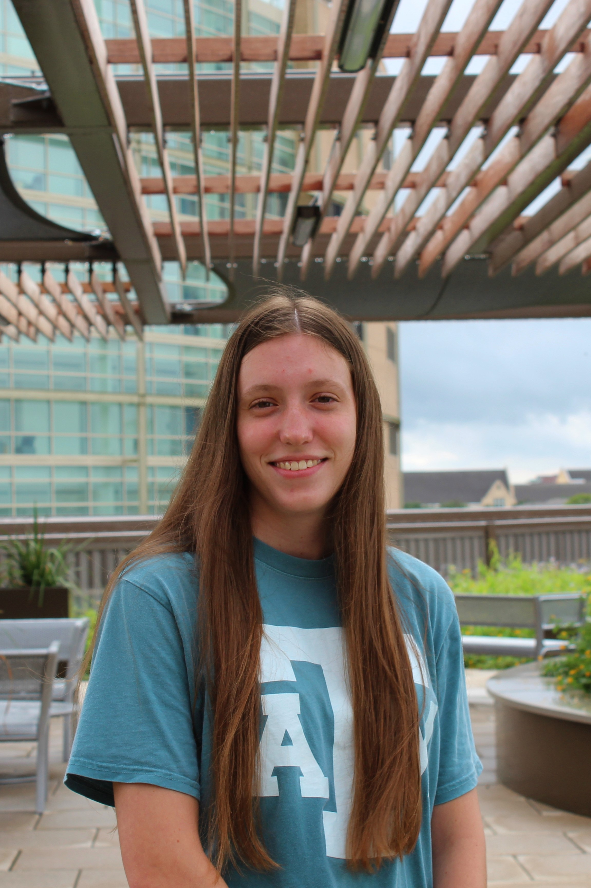
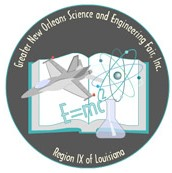

Laura K. Smith |
 |
|---|
Personal Statement
My values and aspirations have been shaped by the experiences that I’ve had. Completing a summer internship in my junior year of high school was one such perspective-altering event. Before that summer, I saw my education as just involving classes and grades. My internship made me realize that my education should include learning experiences outside the classroom. Since this time, my primary academic goal has been to learn and challenge myself outside of my classes. In high school, I achieved this by competing in the Greater New Orleans Science and Engineering Fair. By enlisting the help of a professor from Tulane University, I was able to learn about heat transfer and gain insight into the process of research in college. Now at Texas A&M, I’ve joined the Autonomous Underwater Vehicle project team. As a member, I will learn CAD using Solidworks and I will learn fabrication techniques such as machining. I’ve chosen these different projects to give me a variety of experiences. I’ve also chosen them because they are congruent to my major: mechanical engineering.
My family influenced my decision on field of study. Visiting my uncle’s work is the reason I chose mechanical engineering as my major. During this visit, my uncle showed me an intricate 3d model of an oil rig crane on his computer. Then, he brought me outside to see the same crane, towering above me, in person. This experience stuck with me. I realized that I wanted to be an engineer to design things like him. Meanwhile, my parents, both computer scientists, exposed me to programming. I began trying to design computer games at a young age with a children’s coding program called Scratch. This later helped me land my internship where I learned the programming language Python. My mentor during this internship was a computer engineer and he inspired me to minor in computer science.
To chase after these dreams, I set my ambitions on going to Texas A&M. I achieved this by becoming a National Merit Finalist, which allowed me to afford the school. I was able to receive this title only because of my parents’ emphasis on my education. Because my parents sent me to good schools and pushed me to do well, I was able to become a good student. I remember in elementary school my dad would go over my homework with me each night and quiz me in preparation for tests. He forced me to put care into my homework and study until I was mature enough to make those decisions on my own. This set me up for success. My family’s influence has shaped my life in both the decisions I make and the goals I pursue.
My Projects
2018

Science Fair

Internship experience
2017

Internship experience
My Time at Texas A&M
Honors Reflections |
Relevant Coursework |
|---|---|
|
|